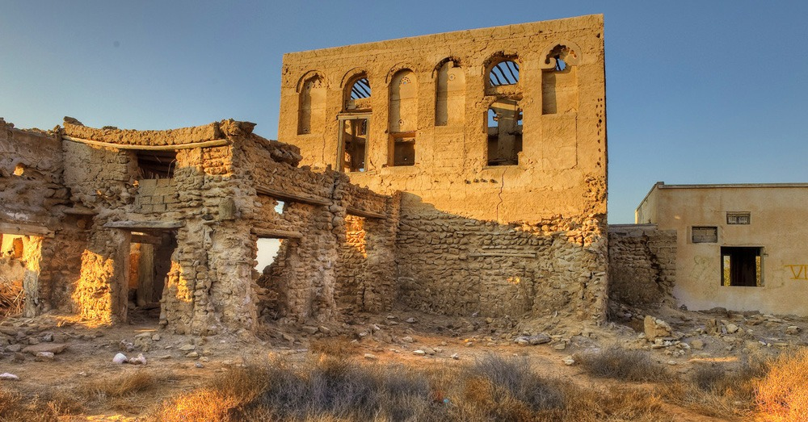
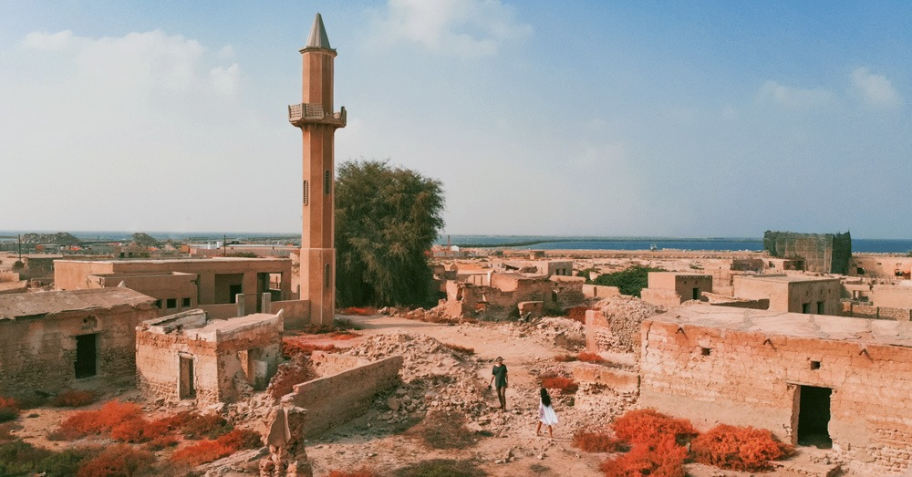

A ghost town or alternatively deserted city or abandoned city is an abandoned village, town, or city,
usually one that contains substantial visible remaining buildings and infrastructure such as roads.
The definition of a ghost town varies between individuals, and between cultures.
Some writers discount settlements that were abandoned as a result of a natural or human-made disaster or other causes using the term only to describe settlements that were deserted because they were no longer economically viable;
T. Lindsey Baker, author of Ghost Towns of Texas, defines a ghost town as "a town for which the reason for being no longer exists".

